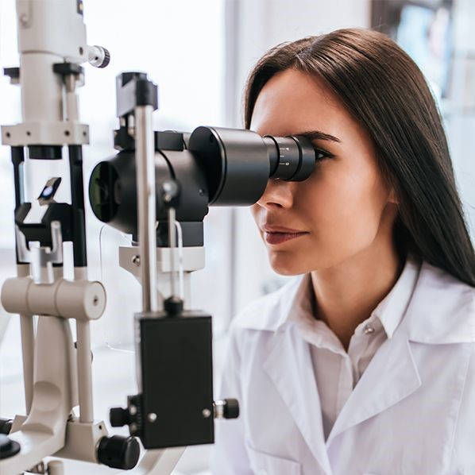
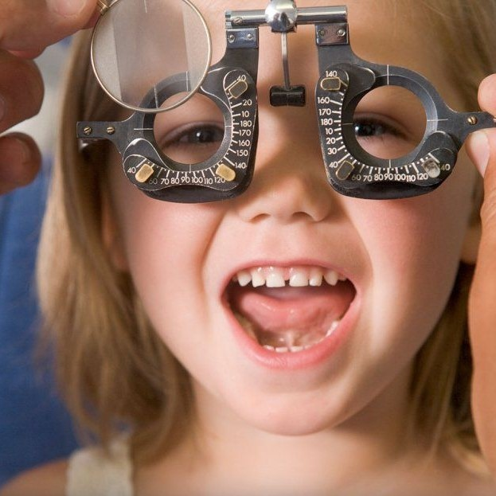

A Clínica Vision oferece a melhor experiência para os seus pacientes, trazendo soluções à sua vista. A nossa equipe especializada possui qualificação e excelência nos serviços prestados.
Para nós, o paciente não é apenas um número. Ele é uma vida valiosa que se encontra fragilizado e inseguro. Por conta disso, os nossos atendentes devem ser ótimos ouvintes para tirar todas as dúvidas e oferecer as melhores resoluções possíveis.
O nosso diferencial é que colocamos os nossos princípios acima da tomada de decisão, agindo com responsabilidade, empatia e inclusão.
ESPECIALIDADES

Especialista em Neuroftalmologia
Neuroftamologia é uma especialidade que cuida das doenças que atingem as funções neurológicas relacionadas ao olho - visão, movimento dos olhos e pupila. Em alguns casos, o problema pode estar relacionado também com alguma outra doença pré-existente e pode chegar a afetar a saude dos olhos.
Distúrbios como perda transitória da visão, visão dupla e perda inexplicável do campo de visão podem ser tratados pelo médico neuroftalmologista.

Especialista em Oftalmopediatria
Oftalmopediatria é uma especialidade para diagnóstico e tratamento de bebês, crianças e adolescentes portadores de doenças como má formação e problemas de refração.
O oftalmopediatra atua em todas as fases da infância. Ao nascerem, todos os bebês devem ser submetidos ao “Teste do Olhinho”, que detecta precocemente alterações visuais, como catarata e glaucoma congênitos, entre outros problemas que quando diagnosticados no nascimento podem ser tratados a tempo, permitindo que a visão se desenvolva normalmente ou muito próxima do normal.
Especialista em Segmento Anterior
O especialista é responsável por analisar o segmento anterior do olho para diagnosticar as condições adversas e indicar tratamentos adequados. Para tratá-las é imprescindível a visita frequente ao oftalmologista. Algumas doenças que são identificadas por esse especialista são miopia, catarata, conjuntivite.
A avaliação é feita com uma lâmpada de fenda, um tipo de microscópio que possibilita o oftalmologista examinar as estruturas da face anterior do olho, com uma luz de alta intensidade.
Patologias que o especialista consegue diagnosticar são, glaucoma, síndrome do olho seco, condições da córnea “úlceras da córnea e queratite”, entre outras.
NOSSA HISTÓRIA
A nossa história começa em 2023, fundada pelo/a doutor Fabrício , no bairro Belenzinho em São Paulo. O doutor idealizava uma clínica com atendimento humanizado e atento às realidades dos pacientes. Não encontrando isso em outros lugares, decidiu criar sua própria clínica, partindo dos princípios abaixo: